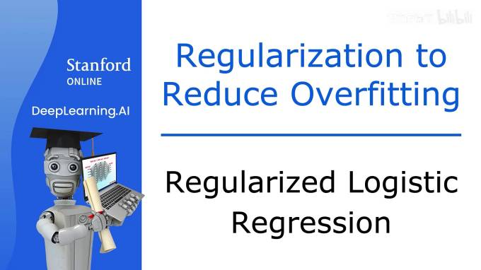
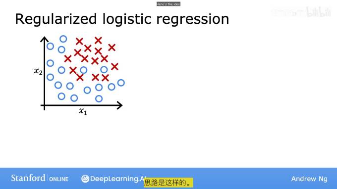
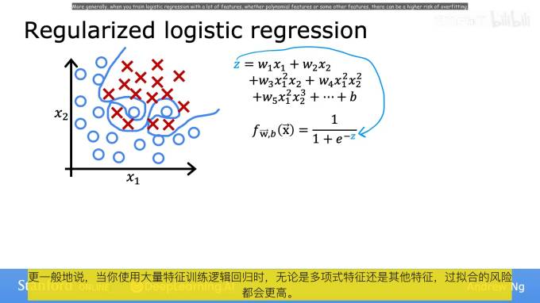
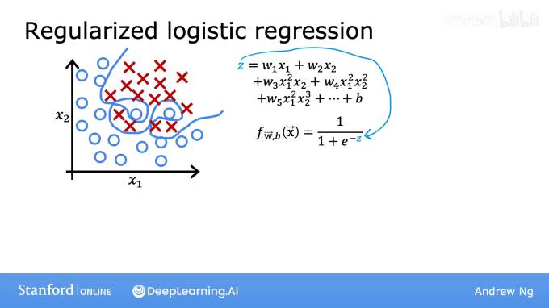
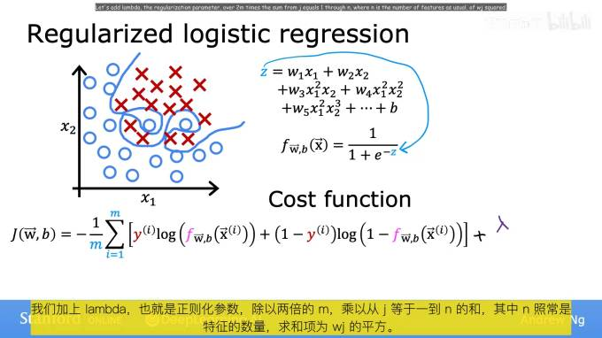
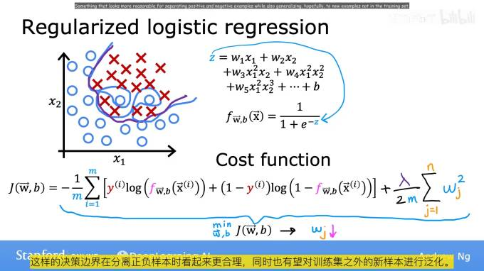
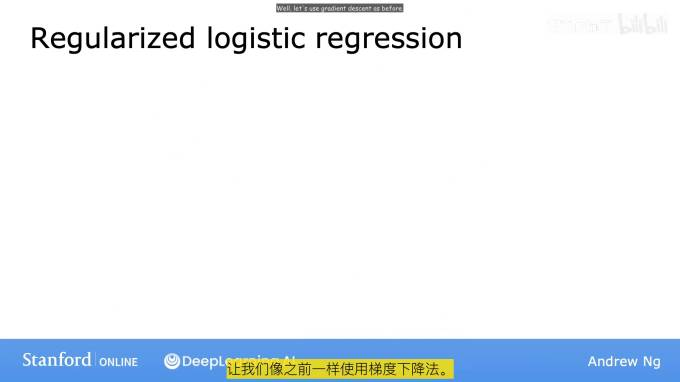
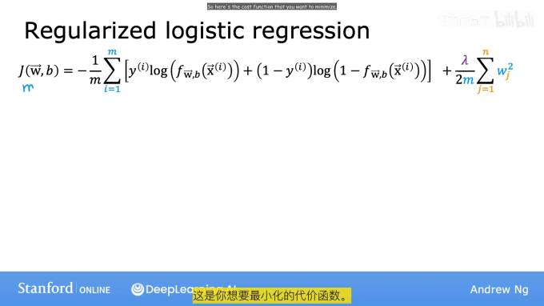
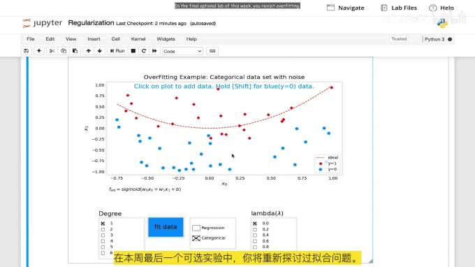
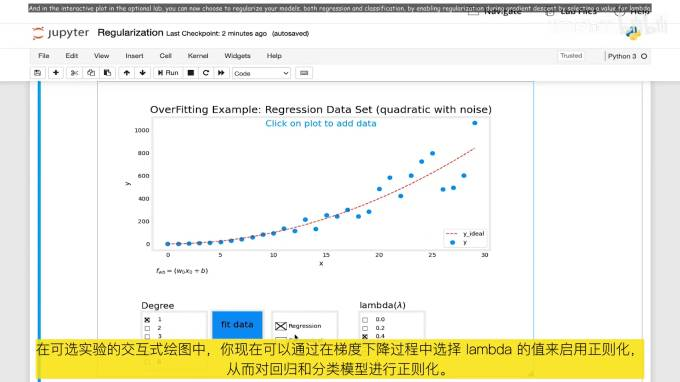

00:02在本视频中，你将看到如何实现正则化逻辑回归。

00:08正如逻辑回归的梯度更新与线性回归的梯度更新看起来惊人地相似一样，你会发现正则化逻辑回归的梯度下降更新看起来也与正则化线性回归的更新相似。

00:26之前我们了解到，如果使用像这样的高阶多项式特征来拟合逻辑回归，它可能会出现过拟合。
00:35这里的 z 是一个高阶多项式，像这样传递给 sigmoid 函数来计算 f。
00:45特别是，你最终可能会得到一个过于复杂的决策边界，从而过拟合训练集。
00:54更一般地说，当你使用大量特征训练逻辑回归时，无论是多项式特征还是其他特征，过拟合的风险都会更高。


01:09如果你想修改它以使用正则化，所需要做的就是添加下面这一项。
01:17我们加上 lambda，也就是正则化参数，除以两倍的 m，乘以从 j 等于一到 n 的和，其中 n 照常是特征的数量，求和项为 wj 的平方。

01:31因此，当你将这个代价函数作为 w 和 b 的函数进行最小化时，它会产生惩罚参数 w 一、w 二直到 wn 的效果，并防止它们变得过大。
01:44如果你这样做，那么即使你使用包含许多参数的高阶多项式进行拟合，你仍然会得到一个看起来像这样的决策边界。
01:54这样的决策边界在分离正负样本时看起来更合理，同时也有望对训练集之外的新样本进行泛化。

02:05那么，当使用正则化时，即使你有很多特征，实际该如何实现呢？
02:12你究竟怎样才能最小化这个包含了正则化项的代价函数 J(w,b) 呢？
02:19让我们像之前一样使用梯度下降法。

02:23这是你想要最小化的代价函数。

02:27为了实现梯度下降，像之前一样，我们将对 wj 和 b 进行如下的同步更新。
02:37这些是梯度下降的常规更新规则。
02:41就像正则化线性回归一样，当你计算这些导数项时，唯一改变的是，对于 wj 的导数，最后会加上这一项，也就是 lambda 除以 m 乘以 wj。
03:00同样，这看起来非常像正则化线性回归的更新。
03:05事实上，除了 f 的定义现在不再是线性函数，而是应用于 z 的逻辑函数之外，其他部分是完全相同的方程。
03:17与线性回归类似，我们只对参数 wj 进行正则化，而不对参数 b 进行正则化，这就是为什么 b 的更新没有变化的原因。
03:30在本周最后一个可选实验中，你将重新探讨过拟合问题。

03:36在可选实验的交互式绘图中，你现在可以通过在梯度下降过程中选择 lambda 的值来启用正则化，从而对回归和分类模型进行正则化。

03:51请特别留意实现正则化逻辑回归的代码，因为你将在本周结束时的练习实验中亲自实现它。
04:04那么，现在你已经知道如何实现正则化逻辑回归了。
04:07当我在硅谷走动时，有很多工程师正在使用机器学习创造大量价值，有时为公司赚了很多钱。
04:18我知道你学习这些东西才几周时间，但如果你理解并能应用线性回归和逻辑回归，这实际上就足以让你创建一些非常有价值的应用了。
04:32虽然你使用的具体学习算法很重要，但了解诸如何时以及如何减少过拟合等知识，结果证明在现实世界中也是一项非常有价值的技能。
04:43所以，我想说，恭喜你取得了这么大的进步。
04:48而且我想说，你能坚持看完这个视频，真的很棒。
04:53我也希望你能完成练习实验和测验。
04:58话虽如此，仍然有许多更令人兴奋的东西需要学习。
05:03在本专业课程的第二门课中，你将学习神经网络，也就是常说的深度学习算法。从实用的语音识别到计算机准确识别图像中的物体，再到自动驾驶汽车，当今人工智能的许多最新突破都归功于神经网络。
05:32构建神经网络的方式实际上大量运用了你已经学过的知识，比如代价函数、梯度下降和 sigmoid 函数。
05:33再次祝贺你完成了第一门课程第三周也就是最后一周的学习。
05:39希望你在实验中玩得开心，我们下周关于神经网络的课程材料中再见。